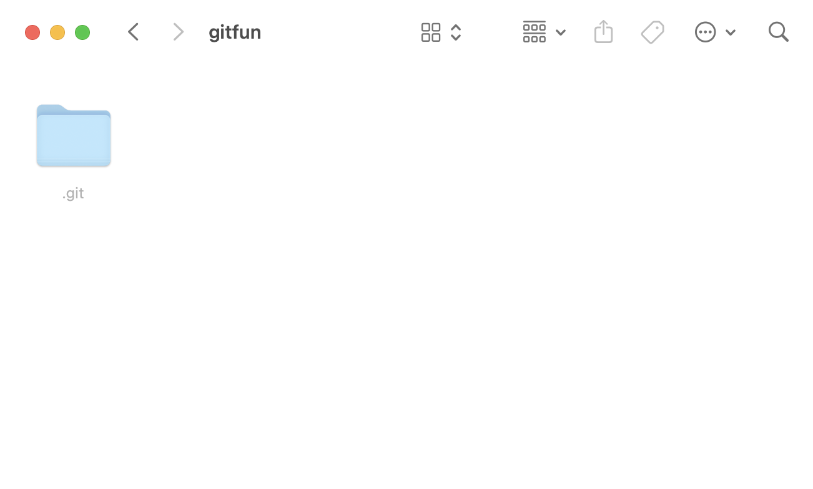

Глава 5 Создание репозитория (init)
Термины:
- Рабочая директория
- Репозиторий
Показать, что это просто папка, в которой есть папка .git и в ней работают команды git.
Открыли терминал. Чтобы понять где мы находимя выполним следующую команду
Создадим и перейдем в новую папку:
Попробуем вызвать команду git status:
Действительно пусто
Инициализируем Git:
Проверим, что появилась папка .git:

И снова попробуем вызвать команду git status:
git status
# On branch main
#
# No commits yet
#
# nothing to commit (create/copy files and use "git add" to track)В последней строке Git сообщает, что нет файлов и предлагает созданные / скопированные файлы отслеживать командой git add.